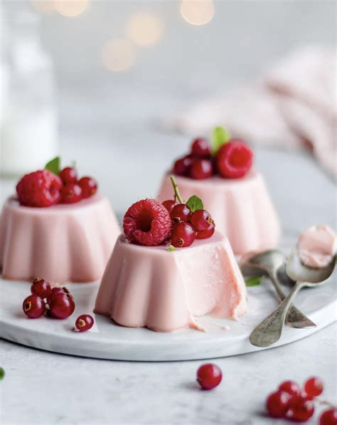

Panna Cotta Recipe

Description
This is a classic recipe for easy, rich and creamy Italian panna cotta. I make this every time I need an impressive, quick dessert! Served in individual portions, you won’t believe how simple this recipe is to make!
Ingredients
- Fresh Berries
- Gelatin
- Sugar
- Milk
Steps
- Sprinkle the gelatin over the cold water or milk and let it sit for a few minutes to gelatinize. You’ll notice the mixture turns into something that looks like soft, rubbery Jello.
- While your gelatin is setting, heat the cream, sugar, and vanilla together in a saucepan until hot and you see a low boil. Make sure all the sugar is dissolved.
- Turn off the heat and scrape out the softened gelatin into the hot cream mixture. Immediately whisk until smooth. Adding the gelatin to the hot mixture is what activates it. Make sure the mixture is completely smooth and that there are no little crystals remaining. If there are, bring the saucepan back to the stove and heat very gently without letting the mixture boil (this is very important!) until the gelatin is completely dissolved.